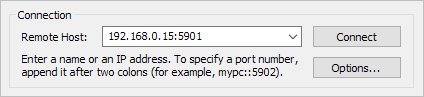

Сервер VNC или удаленный рабочий стол на Ubuntu
Опубликовано: 22.09.2018
Тематические термины: Linux, Ubuntu
В статье рассказано о настройке возможности подключения к Ubuntu по удаленному рабочему столу (аналогично RDP в Windows). Примеры команд выполнены на Linux Ubuntu 18.04.
Установка и настройка
XFCE
Gnome
Проверка настройки
Автозапуск VNC
Установка и настройка VNC сервера
Рассмотрим два варианта использования графической оболочки — xfce и gnome.
Если используется брандмауэр, добавляем правило:
iptables -A INPUT -p tcp --dport 5901 -j ACCEPT
* в данном примере, мы разрешаем входящие соединения на порту 5901. Для работы с несколькими портами, добавляем их по аналогии.
Установка
Установку выполняем следующей командой:
apt install xfce4 xfce4-goodies tightvncserver
Задаем пароль для доступа по удаленному рабочему столу. Для этого вводим команду:
vncserver
На запрос пароля вводим его дважды. После будет предложено ввод пароля для гостевого доступа — можно согласиться (y) и ввести пароль или отказаться (n).
Настройка
Для начала, останавливаем экземпляр VNC сервера:
vncserver -kill :1
* экземпляр :1, по умолчанию, слушает на порту 5900+1 (5901).
Настраиваем VNC сервер:
vi ~/.vnc/xstartup
#!/bin/bash
xrdb $HOME/.Xresources
startxfce4
Снова запускаем vncserver:
vncserver
Установка
Установку выполняем следующей командой:
apt install ubuntu-desktop gnome-panel gnome-settings-daemon metacity nautilus gnome-terminal vnc4server
Задаем пароль для доступа по удаленному рабочему столу. Для этого вводим команду:
vncserver
На запрос пароля вводим его дважды. После будет предложено ввод пароля для гостевого доступа — можно согласиться (y) и ввести пароль или отказаться (n).
Настройка
Для начала, останавливаем экземпляр VNC сервера:
vncserver -kill :1
* экземпляр :1, по умолчанию, слушает на порту 5900+1 (5901).
Настраиваем VNC сервер для текущего пользователя:
vi ~/.vnc/xstartup
#!/bin/sh
# Uncomment the following two lines for normal desktop:
# unset SESSION_MANAGER
# exec /etc/X11/xinit/xinitrc
[ -x /etc/vnc/xstartup ] && exec /etc/vnc/xstartup
[ -r $HOME/.Xresources ] && xrdb $HOME/.Xresources
xsetroot -solid grey
vncconfig -iconic &
x-terminal-emulator -geometry 80x24+10+10 -ls -title "$VNCDESKTOP Desktop" &
x-window-manager &
gnome-panel &
gnome-settings-daemon &
metacity &
Снова запускаем vncserver:
vncserver
Подключаемся к удаленному рабочему столу
Запускаем клиент VNC. Например, в Linux — Remmina, в Windows — TightVNC Viewer или RealVNC. Вводим IP-адрес компьютера с VNC и номер порта:

Будет запрошен пароль — вводим тот, что устанавливали при настройке.
Чтобы VNC сервер запускался после перезагрузки, создаем новый юнит в systemd:
vi /etc/systemd/system/vncserver.service
[Unit]
Description=VNC server
After=syslog.target network.target
[Service]
Type=forking
User=root
PAMName=login
PIDFile=/root/.vnc/%H:%i.pid
ExecStartPre=-/usr/bin/vncserver -kill :1 > /dev/null 2>&1
ExecStart=/usr/bin/vncserver
ExecStop=/usr/bin/vncserver -kill :1
[Install]
WantedBy=multi-user.target
Обновляем systemd:
systemctl daemon-reload
Разрешаем автозапуск сервиса:
systemctl enable vncserver